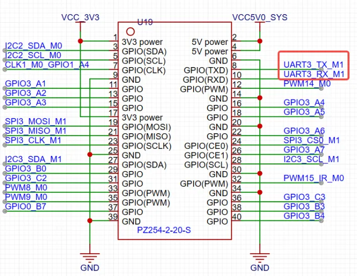
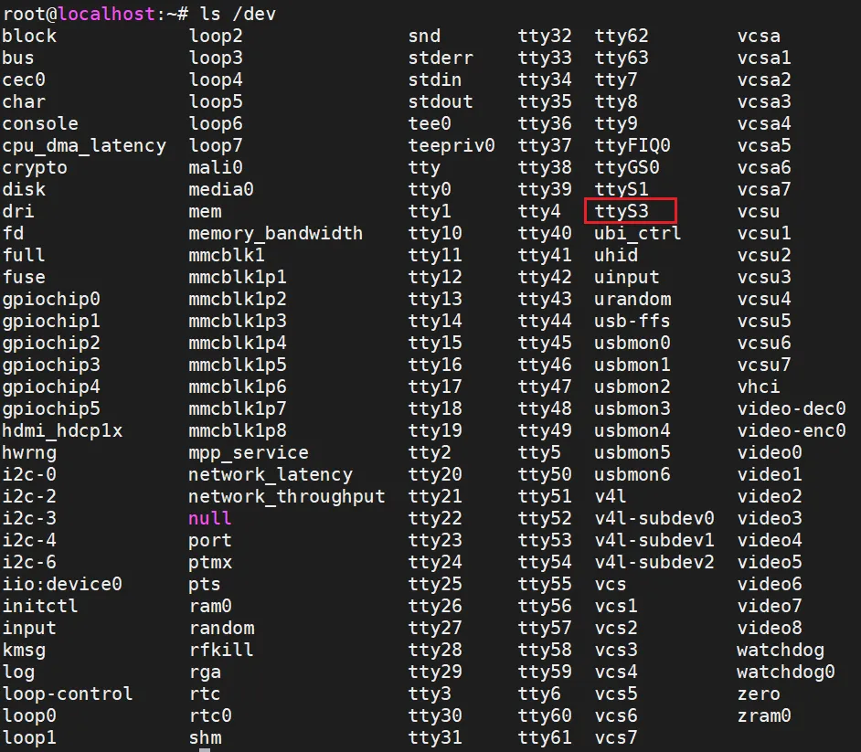

<!DOCTYPE lake>
<h1 data-lake-id="lrAhe" id="lrAhe"><span data-lake-id="u459558bf" id="u459558bf" style="color: rgb(51, 51, 51)">GPIO命名</span></h1><p data-lake-id="ufb8bcb35" id="ufb8bcb35"><span class="lake-fontsize-12" data-lake-id="ua8c734ba" id="ua8c734ba" style="color: rgb(51, 51, 51)">泰山派开发板板载了一个40PIN 2.54间距的贴片排针，排针的引脚定义兼容经典40PIN接口。</span></p><p data-lake-id="u9dc22fb4" id="u9dc22fb4"></p><p data-lake-id="uc0ca68a6" id="uc0ca68a6"><span class="lake-fontsize-12" data-lake-id="ubf32c571" id="ubf32c571" style="color: rgb(51, 51, 51)">在后续对GPIO进行操作前，我们需要先了解k3566的GPIO命名规则， 此处以 </span><strong><span class="lake-fontsize-12" data-lake-id="uecb36cac" id="uecb36cac" style="color: rgb(51, 51, 51)">GPIO0_B7</span></strong><span class="lake-fontsize-12" data-lake-id="u7ec52818" id="u7ec52818" style="color: rgb(51, 51, 51)"> 举例：</span></p><table class="lake-table" data-lake-id="DFJtM" id="DFJtM" margin="true" style="width: 750px"><colgroup><col width="250"/><col width="250"/><col width="250"/></colgroup><tbody><tr data-lake-id="u8104fbec" id="u8104fbec"><td data-lake-id="u64e673da" id="u64e673da"><p data-lake-id="u676cd336" id="u676cd336" style="text-align: left"><strong><span class="lake-fontsize-12" data-lake-id="ub61a4b83" id="ub61a4b83" style="color: rgb(51, 51, 51)">GPIO</span></strong></p></td><td data-lake-id="udb37310b" id="udb37310b"><p data-lake-id="u3d5fa8ad" id="u3d5fa8ad" style="text-align: left"><strong><span class="lake-fontsize-12" data-lake-id="u41a0de6d" id="u41a0de6d" style="color: rgb(51, 51, 51)">0</span></strong></p></td><td data-lake-id="u9a2be655" id="u9a2be655"><p data-lake-id="u2c9ff0e9" id="u2c9ff0e9" style="text-align: left"><strong><span class="lake-fontsize-12" data-lake-id="u98a9f565" id="u98a9f565" style="color: rgb(51, 51, 51)">B7</span></strong></p></td></tr><tr data-lake-id="u48ebdcc0" id="u48ebdcc0"><td data-lake-id="u40ed01fb" id="u40ed01fb"><p data-lake-id="ud1f497d4" id="ud1f497d4" style="text-align: left"><span class="lake-fontsize-12" data-lake-id="uf7ef8e82" id="uf7ef8e82" style="color: rgb(51, 51, 51)">控制器（bank）</span></p></td><td data-lake-id="u0d8eb3dc" id="u0d8eb3dc"><p data-lake-id="u60472400" id="u60472400" style="text-align: left"><span class="lake-fontsize-12" data-lake-id="u1ef1f64b" id="u1ef1f64b" style="color: rgb(51, 51, 51)">端口（port）</span></p></td><td data-lake-id="u7d9995df" id="u7d9995df"><p data-lake-id="ucfe1718d" id="ucfe1718d" style="text-align: left"><span class="lake-fontsize-12" data-lake-id="u5f613c0d" id="u5f613c0d" style="color: rgb(51, 51, 51)">索引序号（pin）</span></p></td></tr></tbody></table><ul list="uc9ec50db"><li data-lake-id="u78bdb7a3" fid="u71eaa76d" id="u78bdb7a3"><strong><span class="lake-fontsize-12" data-lake-id="u2071d4bb" id="u2071d4bb" style="color: rgb(51, 51, 51)">控制器（bank）</span></strong><span class="lake-fontsize-12" data-lake-id="uf5c78d67" id="uf5c78d67" style="color: rgb(51, 51, 51)">：rk3566有5个GPIO控制器分别是GPIO0-GPIO4，一个控制器下面包含ABCD个端口，每个端口下有包含0-7个索引序号，所以一个控制器可控制32个IO引脚。</span></li><li data-lake-id="u88a9cc01" fid="u71eaa76d" id="u88a9cc01"><strong><span class="lake-fontsize-12" data-lake-id="u05b832fa" id="u05b832fa" style="color: rgb(51, 51, 51)">端口（port）</span></strong><span class="lake-fontsize-12" data-lake-id="ua2f464e6" id="ua2f464e6" style="color: rgb(51, 51, 51)">： A、B、C、D。对应着数字：0-3所以A=0、B=1、C=2、D=3</span></li><li data-lake-id="ufe1da979" fid="u71eaa76d" id="ufe1da979"><strong><span class="lake-fontsize-12" data-lake-id="ue65e8ff2" id="ue65e8ff2" style="color: rgb(51, 51, 51)">索引序号（pin）</span></strong><span class="lake-fontsize-12" data-lake-id="u566d2628" id="u566d2628" style="color: rgb(51, 51, 51)">：固定为0-7共计8个数</span></li></ul><p data-lake-id="u7eb2eae9" id="u7eb2eae9"><span class="lake-fontsize-12" data-lake-id="uf5f242f0" id="uf5f242f0" style="color: rgb(51, 51, 51)">​</span><br/></p><p data-lake-id="u949250b8" id="u949250b8"><strong><span class="lake-fontsize-12" data-lake-id="u74eee061" id="u74eee061" style="color: rgb(51, 51, 51)">代入 GPIO0_B7 ，该引脚的 ID 可以按照以下规则组成：</span></strong></p><p data-lake-id="u1bf3b3c3" id="u1bf3b3c3"><br/></p><p data-lake-id="uc1d00c6b" id="uc1d00c6b"><span class="lake-fontsize-12" data-lake-id="u3df5ef69" id="u3df5ef69" style="color: rgb(51, 51, 51)">控制器 (bank) 为 0，表示第 0 组控制器。</span></p><p data-lake-id="u231576bd" id="u231576bd"><span class="lake-fontsize-12" data-lake-id="uca34e2c5" id="uca34e2c5" style="color: rgb(51, 51, 51)">端口（port）为 B，表示端口号为1。</span></p><p data-lake-id="u879db621" id="u879db621"><span class="lake-fontsize-12" data-lake-id="u5856a12e" id="u5856a12e" style="color: rgb(51, 51, 51)">索引序号（pin）为7。</span></p><p data-lake-id="u33a1c69c" id="u33a1c69c"><span class="lake-fontsize-12" data-lake-id="u5af38127" id="u5af38127" style="color: rgb(51, 51, 51)">根据计算公式：32 x 0 + 1 x 8 + 7 = 15，可以得到引脚ID为15。</span></p><h1 data-lake-id="siSu5" id="siSu5"><span data-lake-id="u957a0d9c" id="u957a0d9c" style="color: rgb(51, 51, 51)">sysfs操控GPIO</span></h1><p data-lake-id="uab75223a" id="uab75223a"><span class="lake-fontsize-12" data-lake-id="u73ff3105" id="u73ff3105" style="color: rgb(51, 51, 51)">在Linux中，最常见的读写GPIO方式就是用GPIO sysfs interface， 是通过操作 </span><em><span class="lake-fontsize-12" data-lake-id="ue1bb429c" id="ue1bb429c" style="color: rgb(51, 51, 51)">/sys/class/gpio</span></em><span class="lake-fontsize-12" data-lake-id="ub40ef2be" id="ub40ef2be" style="color: rgb(51, 51, 51)"> 目录下的 </span><em><span class="lake-fontsize-12" data-lake-id="uf96c723f" id="uf96c723f" style="color: rgb(51, 51, 51)">export</span></em><span class="lake-fontsize-12" data-lake-id="u02a4427d" id="u02a4427d" style="color: rgb(51, 51, 51)"> 、 </span><em><span class="lake-fontsize-12" data-lake-id="u104303d5" id="u104303d5" style="color: rgb(51, 51, 51)">unexport</span></em><span class="lake-fontsize-12" data-lake-id="ub67b9315" id="ub67b9315" style="color: rgb(51, 51, 51)"> 、</span><em><span class="lake-fontsize-12" data-lake-id="ud5ab39f0" id="ud5ab39f0" style="color: rgb(51, 51, 51)">gpio{N}/direction</span></em><span class="lake-fontsize-12" data-lake-id="uf07def21" id="uf07def21" style="color: rgb(51, 51, 51)">, </span><em><span class="lake-fontsize-12" data-lake-id="ua2f49118" id="ua2f49118" style="color: rgb(51, 51, 51)">gpio{N} /value</span></em><span class="lake-fontsize-12" data-lake-id="u61e610d4" id="u61e610d4" style="color: rgb(51, 51, 51)"> （用实际引脚号替代{N}）等文件实现的，经常出现shell脚本里面。 在kernel 4.8开始，加入了libgpiod的支持；而原有基于sysfs的访问方式，将被逐渐放弃。</span></p><h2 data-lake-id="n6jBZ" id="n6jBZ"><span data-lake-id="u811aa5d3" id="u811aa5d3" style="color: rgb(51, 51, 51)">GPIO输出测试</span></h2><p data-lake-id="u3a3a1aad" id="u3a3a1aad"><span class="lake-fontsize-12" data-lake-id="uc833ba43" id="uc833ba43" style="color: rgb(119, 119, 119)">使用杜邦线连接GPIO0_B7 引脚 和 核心板的P53引脚，看看能否使用下面的代码控制核心板的LED，实现亮灭效果。当然也可以接入逻辑分析仪，通过查看高低电平的变化。</span></p><span class="yuque-card-unsupported">[codeblock]</span><h2 data-lake-id="C5L7B" id="C5L7B"><span data-lake-id="u3b4f7210" id="u3b4f7210" style="color: rgb(51, 51, 51)">GPIO输入测试</span></h2><p data-lake-id="uc704279e" id="uc704279e"><span class="lake-fontsize-12" data-lake-id="u30eb1f0b" id="u30eb1f0b" style="color: rgb(119, 119, 119)">使用杜邦线连接GPIO0_B7 引脚 和 核心板的P32引脚（核心板上面的按钮外接了P32） ，然后对按键进行按下和弹起操作，并且通过下面的代码打印出来的值。</span></p><span class="yuque-card-unsupported">[codeblock]</span><h1 data-lake-id="i7U6T" id="i7U6T"><span data-lake-id="uc31d5dd6" id="uc31d5dd6" style="color: rgb(51, 51, 51)">libgpiod操控GPIO</span></h1><p data-lake-id="uc8b7c7fe" id="uc8b7c7fe"><span class="lake-fontsize-12" data-lake-id="ubea167fe" id="ubea167fe" style="color: rgb(51, 51, 51)">libgpiod是一种字符设备接口，GPIO访问控制是通过操作字符设备文件（比如 </span><em><span class="lake-fontsize-12" data-lake-id="u6600b765" id="u6600b765" style="color: rgb(51, 51, 51)">/dev/gpiodchip0</span></em><span class="lake-fontsize-12" data-lake-id="ube8f959f" id="ube8f959f" style="color: rgb(51, 51, 51)"> gpio控制器）实现的， 并通过libgpiod提供一些命令工具、c库以及python封装。想要使用libgpiod，需要在板卡上安装libgpiod库。</span></p><span class="yuque-card-unsupported">[codeblock]</span><p data-lake-id="u2f4187eb" id="u2f4187eb"><span class="lake-fontsize-12" data-lake-id="u36c24696" id="u36c24696" style="color: rgb(51, 51, 51)">常用的命令行如下，可使用 </span><em><span class="lake-fontsize-12" data-lake-id="uaadeaae0" id="uaadeaae0" style="color: rgb(51, 51, 51)">-h</span></em><span class="lake-fontsize-12" data-lake-id="u51f385f2" id="u51f385f2" style="color: rgb(51, 51, 51)"> 查看命令相对应的使用说明（以GPIO0_B7为例）</span></p><table class="lake-table" data-lake-id="ln7g6" id="ln7g6" margin="true" style="width: 748px"><colgroup><col width="187"/><col width="187"/><col width="187"/><col width="187"/></colgroup><tbody><tr data-lake-id="u2676234b" id="u2676234b"><td data-lake-id="ubbd043fe" id="ubbd043fe"><p data-lake-id="u16287b4c" id="u16287b4c" style="text-align: left"><strong><span class="lake-fontsize-12" data-lake-id="uea2432e7" id="uea2432e7" style="color: rgb(51, 51, 51)">命令</span></strong></p></td><td data-lake-id="uf48839a2" id="uf48839a2"><p data-lake-id="u7a318d22" id="u7a318d22" style="text-align: left"><strong><span class="lake-fontsize-12" data-lake-id="ud469a854" id="ud469a854" style="color: rgb(51, 51, 51)">作用</span></strong></p></td><td data-lake-id="u2c4cf287" id="u2c4cf287"><p data-lake-id="u137529dc" id="u137529dc" style="text-align: left"><strong><span class="lake-fontsize-12" data-lake-id="u3a7b1487" id="u3a7b1487" style="color: rgb(51, 51, 51)">使用举例</span></strong></p></td><td data-lake-id="u8bddea11" id="u8bddea11"><p data-lake-id="u7273dfb9" id="u7273dfb9" style="text-align: left"><strong><span class="lake-fontsize-12" data-lake-id="u49207fc6" id="u49207fc6" style="color: rgb(51, 51, 51)">说明</span></strong></p></td></tr><tr data-lake-id="ub60f35f5" id="ub60f35f5"><td data-lake-id="u1dc6bb9f" id="u1dc6bb9f"><p data-lake-id="u4c9732c8" id="u4c9732c8" style="text-align: left"><span class="lake-fontsize-12" data-lake-id="uad53f1d5" id="uad53f1d5" style="color: rgb(51, 51, 51)">gpiodetect</span></p></td><td data-lake-id="ua992895e" id="ua992895e"><p data-lake-id="u7945f4b8" id="u7945f4b8" style="text-align: left"><span class="lake-fontsize-12" data-lake-id="u3b162d73" id="u3b162d73" style="color: rgb(51, 51, 51)">列出所有的GPIO控制器</span></p></td><td data-lake-id="u60eace9d" id="u60eace9d"><p data-lake-id="ua565bd98" id="ua565bd98" style="text-align: left"><span class="lake-fontsize-12" data-lake-id="u0adac1fd" id="u0adac1fd" style="color: rgb(51, 51, 51)">gpiodetect(无参数)</span></p></td><td data-lake-id="u6f85fda7" id="u6f85fda7"><p data-lake-id="u03d86ee7" id="u03d86ee7" style="text-align: left"><span class="lake-fontsize-12" data-lake-id="ua9d65e47" id="ua9d65e47" style="color: rgb(51, 51, 51)">列出所有的GPIO控制器</span></p></td></tr><tr data-lake-id="u0cb1eba5" id="u0cb1eba5"><td data-lake-id="u74e2762d" id="u74e2762d" style="background-color: rgb(248, 248, 248)"><p data-lake-id="uaf7796d4" id="uaf7796d4" style="text-align: left"><span class="lake-fontsize-12" data-lake-id="u7b96248c" id="u7b96248c" style="color: rgb(51, 51, 51)">gpioinfo</span></p></td><td data-lake-id="u993ccd5b" id="u993ccd5b" style="background-color: rgb(248, 248, 248)"><p data-lake-id="u77d9339b" id="u77d9339b" style="text-align: left"><span class="lake-fontsize-12" data-lake-id="uf6bad60f" id="uf6bad60f" style="color: rgb(51, 51, 51)">列出gpio控制器的引脚情况</span></p></td><td data-lake-id="u846e458a" id="u846e458a" style="background-color: rgb(248, 248, 248)"><p data-lake-id="u5f88cf60" id="u5f88cf60" style="text-align: left"><span class="lake-fontsize-12" data-lake-id="u48769d20" id="u48769d20" style="color: rgb(51, 51, 51)">gpioinfo 0</span></p></td><td data-lake-id="u983b0768" id="u983b0768" style="background-color: rgb(248, 248, 248)"><p data-lake-id="u168ec06a" id="u168ec06a" style="text-align: left"><span class="lake-fontsize-12" data-lake-id="uc5af935f" id="uc5af935f" style="color: rgb(51, 51, 51)">列出第0组控制器引脚组情况</span></p></td></tr><tr data-lake-id="ub1f21cae" id="ub1f21cae"><td data-lake-id="u363b64cf" id="u363b64cf"><p data-lake-id="uaed916c0" id="uaed916c0" style="text-align: left"><span class="lake-fontsize-12" data-lake-id="ude57006b" id="ude57006b" style="color: rgb(51, 51, 51)">gpioset</span></p></td><td data-lake-id="ua36db4ff" id="ua36db4ff"><p data-lake-id="ua9424dd4" id="ua9424dd4" style="text-align: left"><span class="lake-fontsize-12" data-lake-id="u0f20da24" id="u0f20da24" style="color: rgb(51, 51, 51)">设置gpio</span></p></td><td data-lake-id="uc060edaa" id="uc060edaa"><p data-lake-id="ud0fc1de7" id="ud0fc1de7" style="text-align: left"><span class="lake-fontsize-12" data-lake-id="u8bb9e46d" id="u8bb9e46d" style="color: rgb(51, 51, 51)">gpioset 0 15=0</span></p></td><td data-lake-id="u6549addb" id="u6549addb"><p data-lake-id="u806ff99c" id="u806ff99c" style="text-align: left"><span class="lake-fontsize-12" data-lake-id="u16b47cd9" id="u16b47cd9" style="color: rgb(51, 51, 51)">设置第0组控制器编号7引脚为低电平</span></p></td></tr><tr data-lake-id="u648d7a7b" id="u648d7a7b"><td data-lake-id="ue537d0b2" id="ue537d0b2" style="background-color: rgb(248, 248, 248)"><p data-lake-id="u4e6b6538" id="u4e6b6538" style="text-align: left"><span class="lake-fontsize-12" data-lake-id="uc00a967f" id="uc00a967f" style="color: rgb(51, 51, 51)">gpioget</span></p></td><td data-lake-id="ud7e198e1" id="ud7e198e1" style="background-color: rgb(248, 248, 248)"><p data-lake-id="uff64d9ca" id="uff64d9ca" style="text-align: left"><span class="lake-fontsize-12" data-lake-id="u139abf91" id="u139abf91" style="color: rgb(51, 51, 51)">获取gpio引脚状态</span></p></td><td data-lake-id="uabacfedb" id="uabacfedb" style="background-color: rgb(248, 248, 248)"><p data-lake-id="u163af8f6" id="u163af8f6" style="text-align: left"><span class="lake-fontsize-12" data-lake-id="u32f629db" id="u32f629db" style="color: rgb(51, 51, 51)">gpioget 0 15</span></p></td><td data-lake-id="ua65dc98e" id="ua65dc98e" style="background-color: rgb(248, 248, 248)"><p data-lake-id="u8432ac18" id="u8432ac18" style="text-align: left"><span class="lake-fontsize-12" data-lake-id="ue36ce068" id="ue36ce068" style="color: rgb(51, 51, 51)">获取第0组控制器编号7的引脚状态</span></p></td></tr><tr data-lake-id="u5e549aee" id="u5e549aee"><td data-lake-id="u2b792336" id="u2b792336"><p data-lake-id="ue113ece4" id="ue113ece4" style="text-align: left"><span class="lake-fontsize-12" data-lake-id="u0c716216" id="u0c716216" style="color: rgb(51, 51, 51)">gpiomon</span></p></td><td data-lake-id="uf650d848" id="uf650d848"><p data-lake-id="uf39083ff" id="uf39083ff" style="text-align: left"><span class="lake-fontsize-12" data-lake-id="uce1d603d" id="uce1d603d" style="color: rgb(51, 51, 51)">监控gpio的状态</span></p></td><td data-lake-id="uee0b35c6" id="uee0b35c6"><p data-lake-id="udad55bae" id="udad55bae" style="text-align: left"><span class="lake-fontsize-12" data-lake-id="u3983aa11" id="u3983aa11" style="color: rgb(51, 51, 51)">gpiomon 0 15</span></p></td><td data-lake-id="u8fdb9ead" id="u8fdb9ead"><p data-lake-id="u6a0e77db" id="u6a0e77db" style="text-align: left"><span class="lake-fontsize-12" data-lake-id="u020effdc" id="u020effdc" style="color: rgb(51, 51, 51)">监控第0组控制器编号7的引脚状态</span></p></td></tr></tbody></table><h1 data-lake-id="QNzwC" id="QNzwC"><span data-lake-id="ue7ec9e27" id="ue7ec9e27" style="color: rgb(51, 51, 51)">pwm</span></h1><p data-lake-id="u3ee928c8" id="u3ee928c8"><span class="lake-fontsize-12" data-lake-id="ucaad0ca4" id="ucaad0ca4" style="color: rgb(51, 51, 51)">泰山派默认提供了3组PWM的GPIO ， 为了检测PWM的输出，我们可以配合逻辑分析仪来查看效果，或者搭配STC8的LED灯</span></p><ul list="uf514b4b3"><li data-lake-id="u67a56c39" fid="u99c2e82a" id="u67a56c39"><span class="lake-fontsize-12" data-lake-id="u4acc6ac7" id="u4acc6ac7" style="color: rgb(51, 51, 51)">列举所有的PWM设备：</span></li></ul><span class="yuque-card-unsupported">[codeblock]</span><ul list="ue5b1eb1e"><li data-lake-id="ud0a1e015" fid="u7a0cc978" id="ud0a1e015"><span class="lake-fontsize-12" data-lake-id="u567cddaa" id="u567cddaa" style="color: rgb(51, 51, 51)">这里就以pwm8进行测试：</span></li></ul><span class="yuque-card-unsupported">[codeblock]</span><ul list="u4d478d00"><li data-lake-id="u49911a81" fid="uecf9243a" id="u49911a81"><span class="lake-fontsize-12" data-lake-id="ub058a94a" id="ub058a94a" style="color: rgb(51, 51, 51)">使能调试通道</span></li></ul><span class="yuque-card-unsupported">[codeblock]</span><ul list="u0f6b30b0"><li data-lake-id="u9d8bf5f8" fid="u0a17418b" id="u9d8bf5f8"><span class="lake-fontsize-12" data-lake-id="u7b836ef0" id="u7b836ef0" style="color: rgb(51, 51, 51)">设置pwm周期、频率、极性</span></li></ul><span class="yuque-card-unsupported">[codeblock]</span><ul list="uf7c4fc2a"><li data-lake-id="u95047dcf" fid="u1e7d890a" id="u95047dcf"><span class="lake-fontsize-12" data-lake-id="u6c41044d" id="u6c41044d" style="color: rgb(51, 51, 51)">启动与停止PWM</span></li></ul><span class="yuque-card-unsupported">[codeblock]</span><p data-lake-id="u558c2d4c" id="u558c2d4c"><span class="lake-fontsize-11" data-lake-id="u729db193" id="u729db193" style="color: var(--yq-text-primary)">用户GPIO中其实很多IO口可以复用成串口功能（可查看复用定义表），但是我们这里按照默认定义所以只对8脚、9脚进行复用测试，引脚定义入下图：</span><span class="lake-fontsize-11" data-lake-id="ua44a2b7d" id="ua44a2b7d" style="color: var(--yq-text-primary)"><br/></span><span class="lake-fontsize-11" data-lake-id="udc1a8c1e" id="udc1a8c1e" style="color: var(--yq-text-primary)"><br><br/></br></span></p><p data-lake-id="ud41c1ebb" id="ud41c1ebb"></p><p data-lake-id="u6b80163a" id="u6b80163a"><span class="lake-fontsize-11" data-lake-id="u0b612552" id="u0b612552" style="color: var(--yq-text-primary)"><br/></span><strong><span class="lake-fontsize-18" data-lake-id="u4ae5dc8f" id="u4ae5dc8f" style="color: rgb(51, 51, 51)">硬件连接</span></strong><span class="lake-fontsize-18" data-lake-id="ueee6f01e" id="ueee6f01e" style="color: var(--yq-text-primary)"><br/></span><span class="lake-fontsize-12" data-lake-id="u2da9bac3" id="u2da9bac3" style="color: rgb(51, 51, 51)">测试串口我们需要一个串口调试工具，可以使用串口烧录工具或者STC8核心板扮演这个角色，具体的接线方式参考下面的表格。</span><span class="lake-fontsize-11" data-lake-id="uc10f19f6" id="uc10f19f6" style="color: var(--yq-text-primary)"><br/></span><span class="lake-fontsize-12" data-lake-id="u0b6daa3c" id="u0b6daa3c" style="color: rgb(51, 51, 51)">●串口烧录工具</span><span class="lake-fontsize-11" data-lake-id="u54e907d2" id="u54e907d2" style="color: var(--yq-text-primary)"><br/><br/></span></p><table class="lake-table" data-lake-id="qz1AG" id="qz1AG" margin="true" style="width: 749px"><colgroup><col width="250"/><col width="250"/><col width="249"/></colgroup><tbody><tr data-lake-id="u29d00e6c" id="u29d00e6c"><td data-lake-id="u1ad7a51e" id="u1ad7a51e"><p data-lake-id="u173ebec6" id="u173ebec6"><strong><span class="lake-fontsize-12" data-lake-id="u2a2aa42f" id="u2a2aa42f" style="color: rgb(51, 51, 51)">GPIO引脚编号</span></strong><span class="lake-fontsize-11" data-lake-id="u2d31a4ca" id="u2d31a4ca" style="color: var(--yq-text-primary)"><br/><br/></span></p></td><td data-lake-id="u3bc891af" id="u3bc891af"><p data-lake-id="u958350c4" id="u958350c4"><strong><span class="lake-fontsize-12" data-lake-id="ud237e3e5" id="ud237e3e5" style="color: rgb(51, 51, 51)">GPIO引脚功能</span></strong><span class="lake-fontsize-11" data-lake-id="ub6cb41cd" id="ub6cb41cd" style="color: var(--yq-text-primary)"><br/><br/></span></p></td><td data-lake-id="u45547b69" id="u45547b69"><p data-lake-id="u581d0555" id="u581d0555"><strong><span class="lake-fontsize-12" data-lake-id="u22f6b7df" id="u22f6b7df" style="color: rgb(51, 51, 51)">串口烧录工具</span></strong><span class="lake-fontsize-11" data-lake-id="u2187c6a8" id="u2187c6a8" style="color: var(--yq-text-primary)"><br/><br/></span></p></td></tr><tr data-lake-id="u4107a59f" id="u4107a59f"><td data-lake-id="u443b54f5" id="u443b54f5"><p data-lake-id="u32187632" id="u32187632"><span class="lake-fontsize-12" data-lake-id="uf3150bed" id="uf3150bed" style="color: rgb(51, 51, 51)">8</span><span class="lake-fontsize-11" data-lake-id="ue38bbfc8" id="ue38bbfc8" style="color: var(--yq-text-primary)"><br/><br/></span></p></td><td data-lake-id="u1026caf0" id="u1026caf0"><p data-lake-id="u0ce2c9ea" id="u0ce2c9ea"><span class="lake-fontsize-12" data-lake-id="u554a5bb9" id="u554a5bb9" style="color: rgb(51, 51, 51)">UART3_TX_M1</span><span class="lake-fontsize-11" data-lake-id="u568ba7d9" id="u568ba7d9" style="color: var(--yq-text-primary)"><br/><br/></span></p></td><td data-lake-id="ub517cc70" id="ub517cc70"><p data-lake-id="u8ec4be24" id="u8ec4be24"><span class="lake-fontsize-12" data-lake-id="u0d2bbe74" id="u0d2bbe74" style="color: rgb(51, 51, 51)">RXD</span><span class="lake-fontsize-11" data-lake-id="u392da81e" id="u392da81e" style="color: var(--yq-text-primary)"><br/><br/></span></p></td></tr><tr data-lake-id="u018250ce" id="u018250ce"><td data-lake-id="ua7c62d9a" id="ua7c62d9a" style="background-color: rgb(248, 248, 248)"><p data-lake-id="u059d6859" id="u059d6859"><span class="lake-fontsize-12" data-lake-id="ue0818582" id="ue0818582" style="color: rgb(51, 51, 51)">9</span><span class="lake-fontsize-11" data-lake-id="u5dcda1f3" id="u5dcda1f3" style="color: var(--yq-text-primary)"><br/><br/></span></p></td><td data-lake-id="ub909d937" id="ub909d937" style="background-color: rgb(248, 248, 248)"><p data-lake-id="uf8bc2e5d" id="uf8bc2e5d"><span class="lake-fontsize-12" data-lake-id="u05d58d1d" id="u05d58d1d" style="color: rgb(51, 51, 51)">UART3_RX_M1</span><span class="lake-fontsize-11" data-lake-id="ue939a156" id="ue939a156" style="color: var(--yq-text-primary)"><br/><br/></span></p></td><td data-lake-id="u4614bf1d" id="u4614bf1d" style="background-color: rgb(248, 248, 248)"><p data-lake-id="u1f4c2dd8" id="u1f4c2dd8"><span class="lake-fontsize-12" data-lake-id="u5ac9553f" id="u5ac9553f" style="color: rgb(51, 51, 51)">TXD</span><span class="lake-fontsize-11" data-lake-id="u9e121330" id="u9e121330" style="color: var(--yq-text-primary)"><br/><br/></span></p></td></tr><tr data-lake-id="u4eb4fad7" id="u4eb4fad7"><td data-lake-id="ubf428f82" id="ubf428f82"><p data-lake-id="uebe60831" id="uebe60831"><span class="lake-fontsize-12" data-lake-id="u08f06366" id="u08f06366" style="color: rgb(51, 51, 51)">39</span><span class="lake-fontsize-11" data-lake-id="u8c27b868" id="u8c27b868" style="color: var(--yq-text-primary)"><br/><br/></span></p></td><td data-lake-id="u8de25d13" id="u8de25d13"><p data-lake-id="u934d3a41" id="u934d3a41"><span class="lake-fontsize-12" data-lake-id="ue0b28552" id="ue0b28552" style="color: rgb(51, 51, 51)">GND</span><span class="lake-fontsize-11" data-lake-id="ua2cd918e" id="ua2cd918e" style="color: var(--yq-text-primary)"><br/><br/></span></p></td><td data-lake-id="ue3388a7e" id="ue3388a7e"><p data-lake-id="u17d699d5" id="u17d699d5"><span class="lake-fontsize-12" data-lake-id="u29a00b54" id="u29a00b54" style="color: rgb(51, 51, 51)">GND</span><span class="lake-fontsize-11" data-lake-id="u2b67ecb3" id="u2b67ecb3" style="color: var(--yq-text-primary)"><br/><br/></span></p></td></tr></tbody></table><p data-lake-id="u48935e22" id="u48935e22"><span class="lake-fontsize-12" data-lake-id="ub511f187" id="ub511f187" style="color: rgb(51, 51, 51)">●</span><span class="lake-fontsize-12" data-lake-id="ua8b3af6f" id="ua8b3af6f" style="color: rgb(51, 51, 51)">STC8核心板</span><span class="lake-fontsize-11" data-lake-id="u4c66528b" id="u4c66528b" style="color: var(--yq-text-primary)"><br/><br/></span></p><table class="lake-table" data-lake-id="isAbQ" id="isAbQ" margin="true" style="width: 749px"><colgroup><col width="250"/><col width="250"/><col width="249"/></colgroup><tbody><tr data-lake-id="ue0e2cae5" id="ue0e2cae5"><td data-lake-id="u295c5537" id="u295c5537"><p data-lake-id="udf9c2788" id="udf9c2788"><strong><span class="lake-fontsize-12" data-lake-id="ue72d5f96" id="ue72d5f96" style="color: rgb(51, 51, 51)">GPIO引脚编号</span></strong><span class="lake-fontsize-11" data-lake-id="u56629703" id="u56629703" style="color: var(--yq-text-primary)"><br/><br/></span></p></td><td data-lake-id="u26414d55" id="u26414d55"><p data-lake-id="ub8f1cc37" id="ub8f1cc37"><strong><span class="lake-fontsize-12" data-lake-id="u5538d596" id="u5538d596" style="color: rgb(51, 51, 51)">GPIO引脚功能</span></strong><span class="lake-fontsize-11" data-lake-id="u56fd82e3" id="u56fd82e3" style="color: var(--yq-text-primary)"><br/><br/></span></p></td><td data-lake-id="u2e35e91a" id="u2e35e91a"><p data-lake-id="ub889d30e" id="ub889d30e"><strong><span class="lake-fontsize-12" data-lake-id="ubea003e4" id="ubea003e4" style="color: rgb(51, 51, 51)">STC8核心板</span></strong><span class="lake-fontsize-11" data-lake-id="u734bda9c" id="u734bda9c" style="color: var(--yq-text-primary)"><br/><br/></span></p></td></tr><tr data-lake-id="u7205914c" id="u7205914c"><td data-lake-id="uace2fc70" id="uace2fc70"><p data-lake-id="u558828c1" id="u558828c1"><span class="lake-fontsize-12" data-lake-id="u912c24fb" id="u912c24fb" style="color: rgb(51, 51, 51)">8</span><span class="lake-fontsize-11" data-lake-id="ubbe85289" id="ubbe85289" style="color: var(--yq-text-primary)"><br/><br/></span></p></td><td data-lake-id="u57aaeccf" id="u57aaeccf"><p data-lake-id="u4e2d7f75" id="u4e2d7f75"><span class="lake-fontsize-12" data-lake-id="u5973e097" id="u5973e097" style="color: rgb(51, 51, 51)">UART3_TX_M1</span><span class="lake-fontsize-11" data-lake-id="uf1cb3419" id="uf1cb3419" style="color: var(--yq-text-primary)"><br/><br/></span></p></td><td data-lake-id="u10811970" id="u10811970"><p data-lake-id="uc4cf5839" id="uc4cf5839"><span class="lake-fontsize-12" data-lake-id="u3ef51981" id="u3ef51981" style="color: rgb(51, 51, 51)">TXD</span><span class="lake-fontsize-11" data-lake-id="u288ea6ff" id="u288ea6ff" style="color: var(--yq-text-primary)"><br/><br/></span></p></td></tr><tr data-lake-id="ucafda3c2" id="ucafda3c2"><td data-lake-id="ufe9bf26e" id="ufe9bf26e" style="background-color: rgb(248, 248, 248)"><p data-lake-id="u5d4ba5ac" id="u5d4ba5ac"><span class="lake-fontsize-12" data-lake-id="u9d233004" id="u9d233004" style="color: rgb(51, 51, 51)">9</span><span class="lake-fontsize-11" data-lake-id="u5d8c994c" id="u5d8c994c" style="color: var(--yq-text-primary)"><br/><br/></span></p></td><td data-lake-id="u59c334ab" id="u59c334ab" style="background-color: rgb(248, 248, 248)"><p data-lake-id="u007b9dd4" id="u007b9dd4"><span class="lake-fontsize-12" data-lake-id="u30a53050" id="u30a53050" style="color: rgb(51, 51, 51)">UART3_RX_M1</span><span class="lake-fontsize-11" data-lake-id="ub7029599" id="ub7029599" style="color: var(--yq-text-primary)"><br/><br/></span></p></td><td data-lake-id="u6f7965da" id="u6f7965da" style="background-color: rgb(248, 248, 248)"><p data-lake-id="uf9262956" id="uf9262956"><span class="lake-fontsize-12" data-lake-id="u059f5f93" id="u059f5f93" style="color: rgb(51, 51, 51)">RXD</span><span class="lake-fontsize-11" data-lake-id="uef78b2b6" id="uef78b2b6" style="color: var(--yq-text-primary)"><br/><br/></span></p></td></tr><tr data-lake-id="u09f51cdc" id="u09f51cdc"><td data-lake-id="u7a10ec2e" id="u7a10ec2e"><p data-lake-id="u47462c3e" id="u47462c3e"><span class="lake-fontsize-12" data-lake-id="u3a27582e" id="u3a27582e" style="color: rgb(51, 51, 51)">39</span><span class="lake-fontsize-11" data-lake-id="uade6cd0d" id="uade6cd0d" style="color: var(--yq-text-primary)"><br/><br/></span></p></td><td data-lake-id="u4b2574b6" id="u4b2574b6"><p data-lake-id="ua7ead57e" id="ua7ead57e"><span class="lake-fontsize-12" data-lake-id="uf1413f01" id="uf1413f01" style="color: rgb(51, 51, 51)">GND</span><span class="lake-fontsize-11" data-lake-id="u5182ed14" id="u5182ed14" style="color: var(--yq-text-primary)"><br/><br/></span></p></td><td data-lake-id="u717e0d80" id="u717e0d80"><p data-lake-id="uea6acde8" id="uea6acde8"><span class="lake-fontsize-12" data-lake-id="u27df0953" id="u27df0953" style="color: rgb(51, 51, 51)">GND</span><span class="lake-fontsize-11" data-lake-id="u5e71b5a1" id="u5e71b5a1" style="color: var(--yq-text-primary)"><br/><br/></span></p></td></tr></tbody></table><p data-lake-id="u31cc3f88" id="u31cc3f88"><strong><span class="lake-fontsize-18" data-lake-id="ub4891cc9" id="ub4891cc9" style="color: rgb(51, 51, 51)">串口测试</span></strong><span class="lake-fontsize-18" data-lake-id="u07e70606" id="u07e70606" style="color: var(--yq-text-primary)"><br/></span><span class="lake-fontsize-12" data-lake-id="u1b66b92a" id="u1b66b92a" style="color: rgb(51, 51, 51)">通过设备管理器查看串口序号，然后通过</span><span class="lake-fontsize-12" data-lake-id="u8a9c9016" id="u8a9c9016" style="color: rgb(51, 51, 51); background-color: rgb(243, 244, 244)">stc-isp</span><span class="lake-fontsize-12" data-lake-id="u76fc8fe7" id="u76fc8fe7" style="color: rgb(51, 51, 51)"> 或者 </span><span class="lake-fontsize-12" data-lake-id="u9bc1db35" id="u9bc1db35" style="color: rgb(51, 51, 51); background-color: rgb(243, 244, 244)">sscom</span><span class="lake-fontsize-12" data-lake-id="uc4c4d8e6" id="uc4c4d8e6" style="color: rgb(51, 51, 51)"> 与泰山派进行串口通讯测试</span><span class="lake-fontsize-11" data-lake-id="u625897b7" id="u625897b7" style="color: var(--yq-text-primary)"><br/></span><span class="lake-fontsize-12" data-lake-id="u4edaad0a" id="u4edaad0a" style="color: rgb(51, 51, 51)">●</span><span class="lake-fontsize-12" data-lake-id="u4a603c94" id="u4a603c94" style="color: rgb(51, 51, 51)">查看串口设备</span><span class="lake-fontsize-11" data-lake-id="u4cf61ce7" id="u4cf61ce7" style="color: var(--yq-text-primary)"><br/></span><span class="lake-fontsize-12" data-lake-id="u665751cd" id="u665751cd" style="color: rgb(119, 119, 119)">使用 </span><span class="lake-fontsize-12" data-lake-id="uab72b24a" id="uab72b24a" style="color: rgb(119, 119, 119); background-color: rgb(243, 244, 244)">ls /dev</span><span class="lake-fontsize-12" data-lake-id="u86afbedb" id="u86afbedb" style="color: rgb(119, 119, 119)"> 查看设备，其中罗列出来的ttyS3即是串口设备。</span><span class="lake-fontsize-11" data-lake-id="ue26ca1af" id="ue26ca1af" style="color: var(--yq-text-primary)"><br/><br/></span></p><p data-lake-id="ubfab63c5" id="ubfab63c5"></p><p data-lake-id="u1df5e4ef" id="u1df5e4ef"><span class="lake-fontsize-11" data-lake-id="ud2817fe0" id="ud2817fe0" style="color: var(--yq-text-primary)"><br/><br/></span><span class="lake-fontsize-12" data-lake-id="uf20c2e1b" id="uf20c2e1b" style="color: rgb(51, 51, 51)">●开始测试前需要设置ttyS3的串口参数，这里要与串口工具设置一致才能进行通讯，否则会出现乱码或者无法显示等异常情况，具体命令如下：</span><span class="lake-fontsize-11" data-lake-id="ub37b283b" id="ub37b283b" style="color: var(--yq-text-primary)"><br/><br/></span></p><p data-lake-id="ucdc9c5e0" id="ucdc9c5e0"><span class="lake-fontsize-11" data-lake-id="u01e8fb12" id="u01e8fb12" style="color: rgb(38, 38, 38); background-color: rgb(250, 250, 250)">stty -F /dev/ttyS3 &lt;波特率&gt; cs&lt;数据位&gt; &lt;奇偶校验&gt; &lt;停止位&gt; &lt;流控制&gt;</span></p><p data-lake-id="uae91f88a" id="uae91f88a"><span class="lake-fontsize-11" data-lake-id="u6578bf80" id="u6578bf80" style="color: rgb(38, 38, 38); background-color: rgb(250, 250, 250)">&lt;波特率&gt;常用的有9600、115200 【默认设置的是9600】等。</span></p><p data-lake-id="u9ed7057c" id="u9ed7057c"><span class="lake-fontsize-11" data-lake-id="ub559f618" id="ub559f618" style="color: rgb(38, 38, 38); background-color: rgb(250, 250, 250)">&lt;数据位&gt;数据位数，常见的取值为5、6、7、8，基本上默认都是8位。</span></p><p data-lake-id="u143b8cf4" id="u143b8cf4"><span class="lake-fontsize-11" data-lake-id="uf55fc74b" id="uf55fc74b" style="color: rgb(38, 38, 38); background-color: rgb(250, 250, 250)">&lt;奇偶校验&gt;为奇偶校验类型，可选值为-parity（无校验）、even（偶校验）和odd（奇校验）。</span></p><p data-lake-id="ucc2919f8" id="ucc2919f8"><span class="lake-fontsize-11" data-lake-id="uc19f0086" id="uc19f0086" style="color: rgb(38, 38, 38); background-color: rgb(250, 250, 250)">&lt;停止位&gt;为要设置的停止位数，常见的取值为cstopb=1、-cstopb=2，基本上默认值为cstopb。</span></p><p data-lake-id="ucafc1bae" id="ucafc1bae"><span class="lake-fontsize-11" data-lake-id="uaa28bf83" id="uaa28bf83" style="color: rgb(38, 38, 38); background-color: rgb(250, 250, 250)">&lt;流控制位&gt;crtscts：启用RTS/CTS硬件流控制。-crtscts：禁用RTS/CTS硬件流控制。</span></p><p data-lake-id="u12198e6a" id="u12198e6a"><span class="lake-fontsize-11" data-lake-id="u097d177e" id="u097d177e" style="color: var(--yq-text-primary)"><br/></span><span class="lake-fontsize-12" data-lake-id="u3c343934" id="u3c343934" style="color: rgb(51, 51, 51)">●设置ttyS3串口参数，其他都保持默认，只要设置波特率就行</span><span class="lake-fontsize-11" data-lake-id="u07a8c9ef" id="u07a8c9ef" style="color: var(--yq-text-primary)"><br/></span><span class="lake-fontsize-12" data-lake-id="uf75a635e" id="uf75a635e" style="color: rgb(51, 51, 51)">stty -F /dev/ttyS3 9600</span><span class="lake-fontsize-11" data-lake-id="u32074ba8" id="u32074ba8" style="color: var(--yq-text-primary)"><br/><br/></span><span class="lake-fontsize-12" data-lake-id="u4839065d" id="u4839065d" style="color: rgb(51, 51, 51)">●发送数据到 </span><span class="lake-fontsize-12" data-lake-id="u3bcedf12" id="u3bcedf12" style="color: rgb(51, 51, 51); background-color: rgb(243, 244, 244)">ttyS3</span><span class="lake-fontsize-11" data-lake-id="u85b5f265" id="u85b5f265" style="color: var(--yq-text-primary)"><br/></span><span class="lake-fontsize-12" data-lake-id="u2923e3f5" id="u2923e3f5" style="color: rgb(119, 119, 119)">要想从泰山派通过串口发送数据到windows，只需要把数据写入到 </span><span class="lake-fontsize-12" data-lake-id="u8b94faf6" id="u8b94faf6" style="color: rgb(119, 119, 119); background-color: rgb(243, 244, 244)">ttyS3</span><span class="lake-fontsize-12" data-lake-id="u339ce175" id="u339ce175" style="color: rgb(119, 119, 119)">即可</span><span class="lake-fontsize-11" data-lake-id="uada3d8a8" id="uada3d8a8" style="color: var(--yq-text-primary)"><br/>echo "lckfb-tspi" &gt; /dev/ttyS3<br/><br/></span><span class="lake-fontsize-12" data-lake-id="uad5bc8c9" id="uad5bc8c9" style="color: rgb(51, 51, 51)">●接收 </span><span class="lake-fontsize-12" data-lake-id="uf7c1aaf4" id="uf7c1aaf4" style="color: rgb(51, 51, 51); background-color: rgb(243, 244, 244)">ttyS3</span><span class="lake-fontsize-12" data-lake-id="uc01b2977" id="uc01b2977" style="color: rgb(51, 51, 51)"> 收到的数据</span><span class="lake-fontsize-11" data-lake-id="u8a800272" id="u8a800272" style="color: var(--yq-text-primary)"><br/></span><span class="lake-fontsize-12" data-lake-id="u05233aa7" id="u05233aa7" style="color: rgb(119, 119, 119)">从windows的串口助手发数据给泰山派，只需要查看 </span><span class="lake-fontsize-12" data-lake-id="u82b6a2b7" id="u82b6a2b7" style="color: rgb(119, 119, 119); background-color: rgb(243, 244, 244)">ttyS3</span><span class="lake-fontsize-12" data-lake-id="u9744d8fb" id="u9744d8fb" style="color: rgb(119, 119, 119)">的内容即可</span><span class="lake-fontsize-11" data-lake-id="u5c65d028" id="u5c65d028" style="color: var(--yq-text-primary)"><br/>cat /dev/ttyS3<br/><br/></span></p>